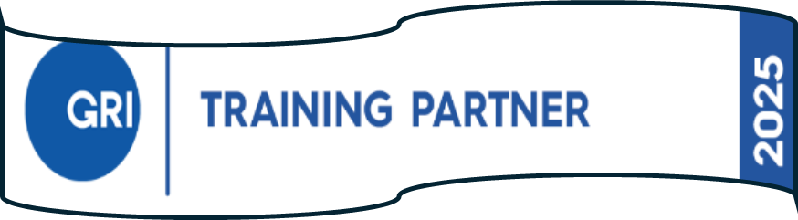

Your partner in sustainable development and ESG transformation. We bring together science, business, and education to help companies and institutions implement modern sustainability practices.


The KBTU ESG Competence Center brings together academia, industry, and professional expertise to help companies, financial institutions, universities, and businesses implement modern sustainable development practices. We offer a full range of solutions — from training courses and workshops to expert consulting and ESG strategy development.
This is a unique opportunity for specialists in Kazakhstan and the CIS to undergo training according to international standards, without traveling abroad, in Russian and English.

From foundational training to advanced strategy — we support your sustainability journey at every step.

We have developed comprehensive programs for the industrial and financial sectors, universities, and SMEs. Our courses help you understand international ESG standards, implement responsible business practices, and prepare world-class ESG reporting.
✓ Subscriptions & Corporate Programs Available
Diagnosing the current level of ESG maturity, preparing ESG reports, supporting companies in obtaining ESG ratings, and developing comprehensive sustainable development strategies.
Step-by-step integration of ESG principles into corporate processes: from audit and roadmap development to the implementation of practical, real-world sustainability projects.
KBTU is an official certified GRI training partner in the Asia-Pacific region. We are the only university to offer the certified course "Reporting with the GRI Standards" part of the official GRI Certified Sustainability Professional training program.
This is a unique opportunity for specialists in Kazakhstan and the CIS to obtain internationally recognized credentials without traveling abroad.

Four pillars that make KBTU ESG Competence Center the premier choice for sustainable development education in Central Asia.
KBTU is the first and only university in Central Asia certified as an official GRI training partner, bringing world-class credentials to the region.
Our faculty combines active practitioners, academic researchers, and specialists in sustainable development, energy, industry, and finance.
Online, offline, and tailored corporate programs designed to fit your schedule and organizational needs without compromising quality.
Practical cases, real-world tools, and hands-on exercises ensure that what you learn can be applied in your organization from day one.
We organize regular ESG networking events, workshops, and master classes that bring together industry leaders, academics, and ESG practitioners to share knowledge and drive sustainable innovation across Kazakhstan and CIS.
Follow updates on new courses, workshops, and collaboration opportunities. Our team will get back to you with the best options for your needs.